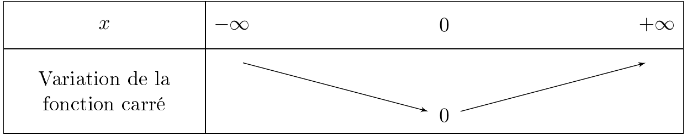
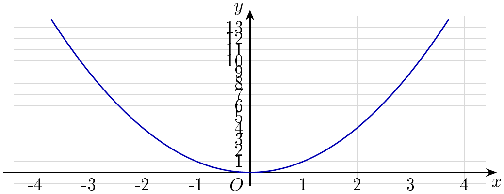
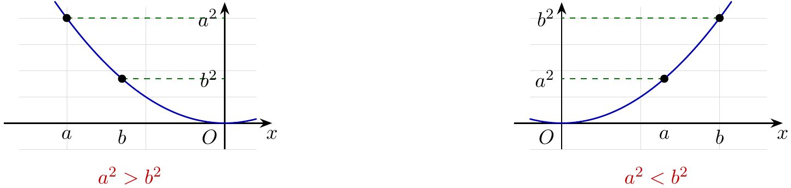
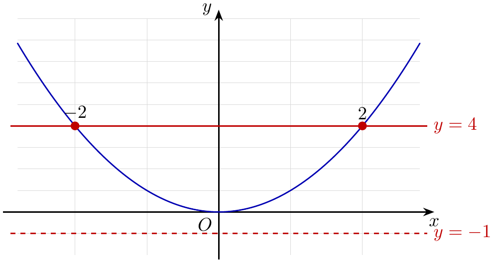

Chapitre 10 : Étude de la fonction carré
Seconde · Chapitre 10 — Étude de la fonction carré · cours de Frederik de Peyrelongue
I. Définition et propriétés
La fonction carré est la fonction $f$ définie sur $\R$ par
La fonction carré est strictement décroissante sur $\left]-\infty\,;0 \right]$ et strictement croissante sur $\left[0\,;+\infty\right[$.
Tableau de variation de la fonction carré :

Démonstration :
Démontrons que $f$ est strictement croissante sur $\left[0\,;+\infty\right[$ : soit $a$ et $b$ deux nombres tels que $0<a<b$.
Je dois donc prouver que $f(a)<f(b)$, ou que $f(a)-f(b)<0$ :
Par hypothèse : $a$ et $b$ sont positifs, donc $a+b>0$ ; et $a<b$, donc $a-b<0$.
Donc, d'après la règle des signes d'un produit : $f(a)-f(b)<0$, ou encore $f(a)<f(b)$.
$f$ est donc strictement croissante sur $\left[0\,;+\infty\right[$.
Démonstration (suite) :
Démontrons que $f$ est strictement décroissante sur $\left]-\infty\,;0\right]$ : soit $a$ et $b$ deux nombres tels que $a<b<0$.
Je dois donc prouver que $f(a)>f(b)$, ou que $f(a)-f(b)>0$ :
Par hypothèse : $a$ et $b$ sont négatifs, donc $a+b<0$ ; et $a<b$, donc $a-b<0$.
Donc, d'après la règle des signes d'un produit : $f(a)-f(b)>0$, ou $f(a)>f(b)$.
$f$ est donc strictement décroissante sur $\left]-\infty\,;0\right]$.
II. Représentation graphique et parité
Une fonction qui vérifie la propriété $f(-x)=f(x)$ pour tout $x\in\R$ est une fonction paire.
La courbe représentative d'une fonction paire est symétrique par rapport à l'axe des ordonnées.
Preuve : soit $M(x\,;y)\in\mathcal{C}_{f}$, donc $y=f(x)$ ; soit $M'$ l'image de $M$ par rapport à l'axe $(Oy)$.
Les coordonnées de $M'$ sont $M'(-x\,;y)=(-x\,;f(x))$.
Si $f$ est paire, alors $f(-x)=f(x)$, donc $M'(-x\,;f(-x))$. L'ordonnée de $M'$ est l'image de l'abscisse, donc $M'\in\mathcal{C}_{f}$. Si l'on a tracé la fonction sur $\R^{+}$, on obtient le complément par symétrie d'axe $(Oy)$.
La fonction carré est une fonction paire.
En effet : $f(-x)=(-x)^{2}=x^{2}=f(x)$ pour tout $x\in\R$.
Dans un repère orthogonal $(O\,;I\,,J)$, la courbe représentative de la fonction carré est une parabole $\mathcal{P}$ de sommet $O$ et d'axe de symétrie $(Oy)$.
- La parabole $\mathcal{P}$ est entièrement située au-dessus de l'axe des abscisses : en effet, pour tout réel $x$, $x^{2}\geqslant 0$.
- Dans un repère orthonormé $(O\,;I\,,J)$, l'axe des ordonnées est un axe de symétrie de la parabole.

III. Comparer les carrés de deux nombres
En utilisant les variations de la fonction carré, on obtient les propriétés suivantes :
Deux nombres négatifs et leurs carrés sont rangés dans des ordres contraires :
pour tous réels $a$ et $b$ tels que $a<b\leqslant 0$, on a $a^{2}>b^{2}$ ;
Deux nombres positifs et leurs carrés sont rangés dans le même ordre :
pour tous réels $a$ et $b$ tels que $0\leqslant a<b$, on a $a^{2}<b^{2}$.

IV. Résoudre l'équation $x^{2}=k$
Les solutions de l'équation $x^{2}=k$ sont les abscisses des points d'intersection de la parabole $\mathcal{P}$ et de la droite parallèle à l'axe des abscisses d'équation $y=k$.
Soit un réel $k$.
- Si $k<0$, l'équation $x^{2}=k$ n'a pas de solution.
- Si $k=0$, l'équation $x^{2}=k$ a une unique solution : $S=\{0\}$.
- Si $k>0$, l'équation $x^{2}=k$ a deux solutions : $S=\left\{-\sqrt{k}\,;\sqrt{k}\right\}$.
Résolution algébrique de $x^{2}=k$ :
1er cas : $k<0$. Un carré est toujours positif : l'équation n'a pas de solution. L'ensemble des solutions est vide.
2e cas : $k\geqslant 0$. On utilise l'identité remarquable $a^{2}-b^{2}=(a-b)(a+b)$.
Comme $k>0$, $k$ est le carré de $\sqrt{k}$ :
Théorème : un produit de facteurs est nul si et seulement si l'un de ses facteurs est nul.
Les solutions de l'équation sont donc $S=\left\{-\sqrt{k}\,;\sqrt{k}\right\}$.
- L'équation $x^{2}=4$ admet deux solutions : $-2$ et $2$.
- L'équation $x^{2}=-1$ n'admet pas de solution.

V. Résoudre une inéquation
5.1 Résoudre graphiquement une inéquation
- Soit $x$ un réel : déterminer les solutions de l'inéquation $x^{2}\leqslant a$ en utilisant la représentation graphique de la fonction carré.
- Les solutions de l'inéquation $x^{2}\leqslant a$ sont les abscisses des points de la courbe de la fonction carré qui ont une ordonnée inférieure ou égale à $a$.
- On trace la droite d'équation $y=a$, on repasse en couleur les points de la courbe qui sont situés en dessous de la droite, puis on lit les abscisses de ces points.

5.2 Résoudre algébriquement une inéquation
Résoudre $f(x)<k$ :
- On se ramène à une comparaison à zéro : $f(x)<k\iff f(x)-k<0$.
- On factorise l'expression obtenue.
- On dresse un tableau de signes et, par lecture du tableau, on peut conclure.
Résoudre $x^{2}<4$ :
On dresse le tableau de signes :
| $x$ | $-\infty$ | $-2$ | $2$ | $+\infty$ | |
| $(x-2)$ | $-$ | $-$ | $0$ | $+$ | |
| $(x+2)$ | $-$ | $0$ | $+$ | $+$ | |
| $(x-2)(x+2)$ | $+$ | $0$ | $-$ | $0$ | $+$ |
On peut conclure que, dans l'intervalle $\left]-2\,;2\right[$, l'expression $(x-2)(x+2)$ est strictement négative :